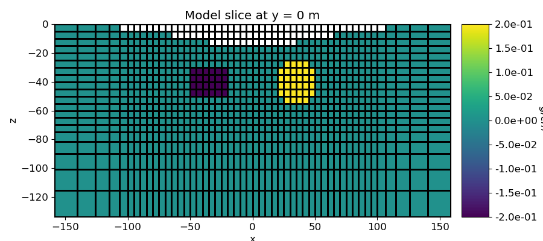
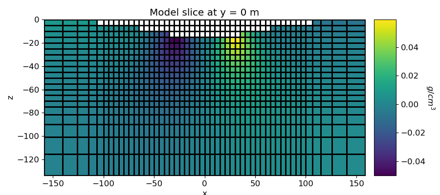

Note
Go to the end to download the full example code.
Least-Squares Inversion of Gravity Anomaly Data#
Here we invert gravity anomaly data to recover a density contrast model. We formulate the inverse problem as a least-squares optimization problem. For this tutorial, we focus on the following:
Defining the survey from xyz formatted data
Generating a mesh based on survey geometry
Including surface topography
Defining the inverse problem (data misfit, regularization, optimization)
Specifying directives for the inversion
Plotting the recovered model and data misfit
Although we consider gravity anomaly data in this tutorial, the same approach can be used to invert gradiometry and other types of geophysical data.
Import modules#
import os
import numpy as np
import matplotlib as mpl
import matplotlib.pyplot as plt
import tarfile
from discretize import TensorMesh
from discretize.utils import active_from_xyz
from simpeg.utils import plot2Ddata, model_builder
from simpeg.potential_fields import gravity
from simpeg import (
maps,
data,
data_misfit,
inverse_problem,
regularization,
optimization,
directives,
inversion,
utils,
)
# sphinx_gallery_thumbnail_number = 3
Define File Names#
File paths for assets we are loading. To set up the inversion, we require topography and field observations. The true model defined on the whole mesh is loaded to compare with the inversion result. These files are stored as a tar-file on our google cloud bucket: “https://storage.googleapis.com/simpeg/doc-assets/gravity.tar.gz”
# storage bucket where we have the data
data_source = "https://storage.googleapis.com/simpeg/doc-assets/gravity.tar.gz"
# download the data
downloaded_data = utils.download(data_source, overwrite=True)
# unzip the tarfile
tar = tarfile.open(downloaded_data, "r")
tar.extractall()
tar.close()
# path to the directory containing our data
dir_path = downloaded_data.split(".")[0] + os.path.sep
# files to work with
topo_filename = dir_path + "gravity_topo.txt"
data_filename = dir_path + "gravity_data.obs"
Downloading https://storage.googleapis.com/simpeg/doc-assets/gravity.tar.gz
saved to: /home/vsts/work/1/s/tutorials/03-gravity/gravity.tar.gz
Download completed!
Load Data and Plot#
Here we load and plot synthetic gravity anomaly data. Topography is generally defined as an (N, 3) array. Gravity data is generally defined with 4 columns: x, y, z and data.
# Load topography
xyz_topo = np.loadtxt(str(topo_filename))
# Load field data
dobs = np.loadtxt(str(data_filename))
# Define receiver locations and observed data
receiver_locations = dobs[:, 0:3]
dobs = dobs[:, -1]
# Plot
mpl.rcParams.update({"font.size": 12})
fig = plt.figure(figsize=(7, 5))
ax1 = fig.add_axes([0.1, 0.1, 0.73, 0.85])
plot2Ddata(receiver_locations, dobs, ax=ax1, contourOpts={"cmap": "bwr"})
ax1.set_title("Gravity Anomaly")
ax1.set_xlabel("x (m)")
ax1.set_ylabel("y (m)")
ax2 = fig.add_axes([0.8, 0.1, 0.03, 0.85])
norm = mpl.colors.Normalize(vmin=-np.max(np.abs(dobs)), vmax=np.max(np.abs(dobs)))
cbar = mpl.colorbar.ColorbarBase(
ax2, norm=norm, orientation="vertical", cmap=mpl.cm.bwr, format="%.1e"
)
cbar.set_label("$mgal$", rotation=270, labelpad=15, size=12)
plt.show()
Assign Uncertainties#
Inversion with SimPEG requires that we define the standard deviation of our data. This represents our estimate of the noise in our data. For a gravity inversion, a constant floor value is generally applied to all data. For this tutorial, the standard deviation on each datum will be 1% of the maximum observed gravity anomaly value.
maximum_anomaly = np.max(np.abs(dobs))
uncertainties = 0.01 * maximum_anomaly * np.ones(np.shape(dobs))
Defining the Survey#
Here, we define the survey that will be used for this tutorial. Gravity surveys are simple to create. The user only needs an (N, 3) array to define the xyz locations of the observation locations. From this, the user can define the receivers and the source field.
# Define the receivers. The data consists of vertical gravity anomaly measurements.
# The set of receivers must be defined as a list.
receiver_list = gravity.receivers.Point(receiver_locations, components="gz")
receiver_list = [receiver_list]
# Define the source field
source_field = gravity.sources.SourceField(receiver_list=receiver_list)
# Define the survey
survey = gravity.survey.Survey(source_field)
Defining the Data#
Here is where we define the data that is inverted. The data is defined by the survey, the observation values and the standard deviation.
data_object = data.Data(survey, dobs=dobs, standard_deviation=uncertainties)
Defining a Tensor Mesh#
Here, we create the tensor mesh that will be used to invert gravity anomaly data. If desired, we could define an OcTree mesh.
Starting/Reference Model and Mapping on Tensor Mesh#
Here, we create starting and/or reference models for the inversion as well as the mapping from the model space to the active cells. Starting and reference models can be a constant background value or contain a-priori structures.
# Find the indices of the active cells in forward model (ones below surface)
ind_active = active_from_xyz(mesh, xyz_topo)
# Define mapping from model to active cells
nC = int(ind_active.sum())
model_map = maps.IdentityMap(nP=nC) # model consists of a value for each active cell
# Define and plot starting model
starting_model = np.zeros(nC)
Define the Physics#
Here, we define the physics of the gravity problem by using the simulation class.
Tip
Since SimPEG v0.21.0 we can use Choclo as the engine for running the gravity
simulations, which results in faster and more memory efficient runs. Just
pass engine="choclo" when constructing the simulation.
simulation = gravity.simulation.Simulation3DIntegral(
survey=survey,
mesh=mesh,
rhoMap=model_map,
ind_active=ind_active,
engine="choclo",
)
Define the Inverse Problem#
The inverse problem is defined by 3 things:
Data Misfit: a measure of how well our recovered model explains the field data
Regularization: constraints placed on the recovered model and a priori information
Optimization: the numerical approach used to solve the inverse problem
# Define the data misfit. Here the data misfit is the L2 norm of the weighted
# residual between the observed data and the data predicted for a given model.
# Within the data misfit, the residual between predicted and observed data are
# normalized by the data's standard deviation.
dmis = data_misfit.L2DataMisfit(data=data_object, simulation=simulation)
# Define the regularization (model objective function).
reg = regularization.WeightedLeastSquares(
mesh, active_cells=ind_active, mapping=model_map
)
# Define how the optimization problem is solved. Here we will use a projected
# Gauss-Newton approach that employs the conjugate gradient solver.
opt = optimization.ProjectedGNCG(
maxIter=10, lower=-1.0, upper=1.0, maxIterLS=20, maxIterCG=10, tolCG=1e-3
)
# Here we define the inverse problem that is to be solved
inv_prob = inverse_problem.BaseInvProblem(dmis, reg, opt)
Define Inversion Directives#
Here we define any directiveas that are carried out during the inversion. This includes the cooling schedule for the trade-off parameter (beta), stopping criteria for the inversion and saving inversion results at each iteration.
# Defining a starting value for the trade-off parameter (beta) between the data
# misfit and the regularization.
starting_beta = directives.BetaEstimate_ByEig(beta0_ratio=1e1)
# Defining the fractional decrease in beta and the number of Gauss-Newton solves
# for each beta value.
beta_schedule = directives.BetaSchedule(coolingFactor=5, coolingRate=1)
# Options for outputting recovered models and predicted data for each beta.
save_iteration = directives.SaveOutputEveryIteration(save_txt=False)
# Updating the preconditionner if it is model dependent.
update_jacobi = directives.UpdatePreconditioner()
# Setting a stopping criteria for the inversion.
target_misfit = directives.TargetMisfit(chifact=1)
# Add sensitivity weights
sensitivity_weights = directives.UpdateSensitivityWeights(every_iteration=False)
# The directives are defined as a list.
directives_list = [
sensitivity_weights,
starting_beta,
beta_schedule,
save_iteration,
update_jacobi,
target_misfit,
]
Running the Inversion#
To define the inversion object, we need to define the inversion problem and the set of directives. We can then run the inversion.
# Here we combine the inverse problem and the set of directives
inv = inversion.BaseInversion(inv_prob, directives_list)
# Run inversion
recovered_model = inv.run(starting_model)
Running inversion with SimPEG v0.22.0
simpeg.InvProblem will set Regularization.reference_model to m0.
simpeg.InvProblem will set Regularization.reference_model to m0.
simpeg.InvProblem will set Regularization.reference_model to m0.
simpeg.InvProblem will set Regularization.reference_model to m0.
simpeg.InvProblem will set Regularization.reference_model to m0.
simpeg.InvProblem will set Regularization.reference_model to m0.
simpeg.InvProblem will set Regularization.reference_model to m0.
simpeg.InvProblem is setting bfgsH0 to the inverse of the eval2Deriv.
***Done using the default solver Pardiso and no solver_opts.***
model has any nan: 0
=============================== Projected GNCG ===============================
# beta phi_d phi_m f |proj(x-g)-x| LS Comment
-----------------------------------------------------------------------------
x0 has any nan: 0
0 3.17e+04 2.66e+05 0.00e+00 2.66e+05 2.19e+02 0
1 6.35e+03 1.15e+05 1.58e+00 1.25e+05 2.18e+02 0
2 1.27e+03 3.79e+04 7.28e+00 4.71e+04 2.17e+02 0 Skip BFGS
3 2.54e+02 6.07e+03 1.76e+01 1.05e+04 2.14e+02 0 Skip BFGS
4 5.08e+01 6.66e+02 2.55e+01 1.96e+03 2.00e+02 0 Skip BFGS
------------------------- STOP! -------------------------
1 : |fc-fOld| = 0.0000e+00 <= tolF*(1+|f0|) = 2.6622e+04
1 : |xc-x_last| = 8.1028e-02 <= tolX*(1+|x0|) = 1.0000e-01
0 : |proj(x-g)-x| = 2.0041e+02 <= tolG = 1.0000e-01
0 : |proj(x-g)-x| = 2.0041e+02 <= 1e3*eps = 1.0000e-02
0 : maxIter = 10 <= iter = 5
------------------------- DONE! -------------------------
Recreate True Model#
# Define density contrast values for each unit in g/cc
background_density = 0.0
block_density = -0.2
sphere_density = 0.2
# Define model. Models in SimPEG are vector arrays.
true_model = background_density * np.ones(nC)
# You could find the indicies of specific cells within the model and change their
# value to add structures.
ind_block = (
(mesh.gridCC[ind_active, 0] > -50.0)
& (mesh.gridCC[ind_active, 0] < -20.0)
& (mesh.gridCC[ind_active, 1] > -15.0)
& (mesh.gridCC[ind_active, 1] < 15.0)
& (mesh.gridCC[ind_active, 2] > -50.0)
& (mesh.gridCC[ind_active, 2] < -30.0)
)
true_model[ind_block] = block_density
# You can also use SimPEG utilities to add structures to the model more concisely
ind_sphere = model_builder.get_indices_sphere(
np.r_[35.0, 0.0, -40.0], 15.0, mesh.gridCC
)
ind_sphere = ind_sphere[ind_active]
true_model[ind_sphere] = sphere_density
Plotting True Model and Recovered Model#
# Plot True Model
fig = plt.figure(figsize=(9, 4))
plotting_map = maps.InjectActiveCells(mesh, ind_active, np.nan)
ax1 = fig.add_axes([0.1, 0.1, 0.73, 0.8])
mesh.plot_slice(
plotting_map * true_model,
normal="Y",
ax=ax1,
ind=int(mesh.shape_cells[1] / 2),
grid=True,
clim=(np.min(true_model), np.max(true_model)),
pcolor_opts={"cmap": "viridis"},
)
ax1.set_title("Model slice at y = 0 m")
ax2 = fig.add_axes([0.85, 0.1, 0.05, 0.8])
norm = mpl.colors.Normalize(vmin=np.min(true_model), vmax=np.max(true_model))
cbar = mpl.colorbar.ColorbarBase(
ax2, norm=norm, orientation="vertical", cmap=mpl.cm.viridis, format="%.1e"
)
cbar.set_label("$g/cm^3$", rotation=270, labelpad=15, size=12)
plt.show()
# Plot Recovered Model
fig = plt.figure(figsize=(9, 4))
plotting_map = maps.InjectActiveCells(mesh, ind_active, np.nan)
ax1 = fig.add_axes([0.1, 0.1, 0.73, 0.8])
mesh.plot_slice(
plotting_map * recovered_model,
normal="Y",
ax=ax1,
ind=int(mesh.shape_cells[1] / 2),
grid=True,
clim=(np.min(recovered_model), np.max(recovered_model)),
pcolor_opts={"cmap": "viridis"},
)
ax1.set_title("Model slice at y = 0 m")
ax2 = fig.add_axes([0.85, 0.1, 0.05, 0.8])
norm = mpl.colors.Normalize(vmin=np.min(recovered_model), vmax=np.max(recovered_model))
cbar = mpl.colorbar.ColorbarBase(
ax2, norm=norm, orientation="vertical", cmap=mpl.cm.viridis
)
cbar.set_label("$g/cm^3$", rotation=270, labelpad=15, size=12)
plt.show()
- 
- 
Plotting Predicted Data and Normalized Misfit#
# Predicted data with final recovered model
# SimPEG uses right handed coordinate where Z is positive upward.
# This causes gravity signals look "inconsistent" with density values in visualization.
dpred = inv_prob.dpred
# Observed data | Predicted data | Normalized data misfit
data_array = np.c_[dobs, dpred, (dobs - dpred) / uncertainties]
fig = plt.figure(figsize=(17, 4))
plot_title = ["Observed", "Predicted", "Normalized Misfit"]
plot_units = ["mgal", "mgal", ""]
ax1 = 3 * [None]
ax2 = 3 * [None]
norm = 3 * [None]
cbar = 3 * [None]
cplot = 3 * [None]
v_lim = [np.max(np.abs(dobs)), np.max(np.abs(dobs)), np.max(np.abs(data_array[:, 2]))]
for ii in range(0, 3):
ax1[ii] = fig.add_axes([0.33 * ii + 0.03, 0.11, 0.23, 0.84])
cplot[ii] = plot2Ddata(
receiver_list[0].locations,
data_array[:, ii],
ax=ax1[ii],
ncontour=30,
clim=(-v_lim[ii], v_lim[ii]),
contourOpts={"cmap": "bwr"},
)
ax1[ii].set_title(plot_title[ii])
ax1[ii].set_xlabel("x (m)")
ax1[ii].set_ylabel("y (m)")
ax2[ii] = fig.add_axes([0.33 * ii + 0.25, 0.11, 0.01, 0.85])
norm[ii] = mpl.colors.Normalize(vmin=-v_lim[ii], vmax=v_lim[ii])
cbar[ii] = mpl.colorbar.ColorbarBase(
ax2[ii], norm=norm[ii], orientation="vertical", cmap=mpl.cm.bwr
)
cbar[ii].set_label(plot_units[ii], rotation=270, labelpad=15, size=12)
plt.show()
Total running time of the script: (0 minutes 12.670 seconds)
Estimated memory usage: 9 MB